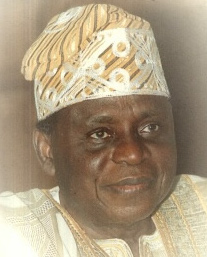

The Chairman

Late Alhaji Chief (Dr.) Abdulwahab Iyanda Folawiyo, C.O.N. was no doubt one of the icons of Nigerian industry
and philanthropy, and a pillar of Islam with the revered title of the Baba Adinni of Nigeria.
Born in Lagos on the 16th of June 1928, to a successful Lagos merchant, Pa Tijani, the young Wahab Iyanda Folawiyo
attended Olowogbowo Methodist Primary School, Lagos (1934 - 1941) and Ilesha Grammar School, Ilesha. Late Chief
Folawiyo who was the only African Principal Member of the Baltic Exchange in the City of London, also attended
in 1951 the famous North-Western Polytechnic, London, where he read Management, specialising in Ship Brokerage.
Back home in 1957, Chief Folawiyo founded Yinka Folawiyo & Sons, an enterprise that engages in import and export business between Nigeria and Europe. Today, Alhaji Folawiyo’s large business empire includes holdings in shipping, banking, construction, agriculture and energy.
The Yinka Folawiyo Group, of which Yinka Folawiyo & Sons Limited is the parent body, includes the Maritime Associates (International) Limited, Folawiyo Farms Limited, Ilora, Oyo State; Folawiyo Fisheries Limited, Yinka Folawiyo Petroleum Company Limited, United Property Developers Limited, and, the latest additions to the Group:, Yinka Folawiyo Electrical & Mechanical Company Limited, Y.F Power Limited and Folawiyo Energy Ltd.
A man of many parts, Alhaji Folawiyo’s achievements in other areas were as monumental as his successes in business. A philanthropist extraordinaire, Alhaji Folawiyo consistently offered support to religious (Islamic) advancement, educational development and sports improvement. He has contributed majorly to the construction of mosques all over the country including the Lagos Central Mosque and the Sultan Bello Mosque in Kaduna. He single-handedly financed the construction of the Surulere Central Mosque, Lagos. In Sports, Alhaji Folawiyo was the sole sponsor of the Yinka Folawiyo U-15 Athletics Championships and the National Amateur Wrestling Championships, both annual national events of many years running. Alhaji Folawiyo was of course not lacking in his support of socio-economic projects aimed at improving the lives of the less privileged in the society. Indeed, he was one of the greatest, yet one of the most unpublicised, of Nigeria’s eminent philanthropists.
He founded the Bab-Es-Salam Home which he dedicated to the upbringing and education of orphans. He also made significant contributions to the development funds of numerous states in the Federation. In the field of education, Alhaji Folawiyo has also written his name in gold. Apart from endowing a professorial chair in Physics in the University of Lagos, Alhaji Folawiyo has contributed to the endowment funds of many Nigerian Universities and has vigorously supported research into various fields of knowledge, notable among which is the Virus Research in the University of Ibadan.
In June 1998, Chief Folawiyo became the first private individual to put together a physical structure in the University of Lagos when he upgraded the University’s Health Centre to a full fledged hospital complete with an X-Ray Unit. Alhaji Folawiyo has sponsored, and continues to sponsor, a lot of Nigerians, both able bodied and the physically challenged to tertiary institutions in the country, and has, as well, contributed immensely to primary and secondary education development funds both in Lagos State and Nigeria as a whole. In appreciation of his immense contributions, Alhaji Folawiyo is the recipient of several honours and awards including Doctor of Law by the university of Cross River State Uyo, 1991, Doctor of Letters by Ahmadu Bello University, Zaria, 1992 and Doctor of Science by the Lagos State University, Ojo, Lagos, 1998. He has a Secondary School, Wahab Folawiyo High School in the highbrow area of Ikoyi, Lagos State named after him.
Alhaji Folawiyo was the Grand Patron of Nigerian Muslim Council; Chairman, Executive Council of the Lagos Central Mosque; Honorary Fellow, Chartered Institute of Transport; Fellow, Commonwealth Journalists Association; Chairman, Maize Association of Nigeria, and Patron, Institute of Freight Forwarders of Nigeria. He was also honoured with the key to DADE County, Florida, in the United States of America. He received the national honour of Order of Federal Republic, OFR, conferred on him in 1982, as well as Commander of the Order of the Niger, CON, on November 16, 2000. The University of Lagos also conferred on him the Millennium Award of Doctor of Science. He was appointed CHANCELLOR, Lagos State University on 17th April, 1999. He was the Patron of the Nigerian-British Chamber of Commerce.